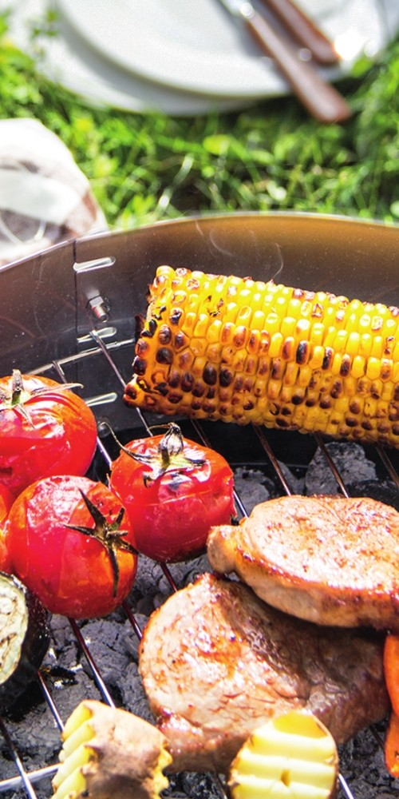
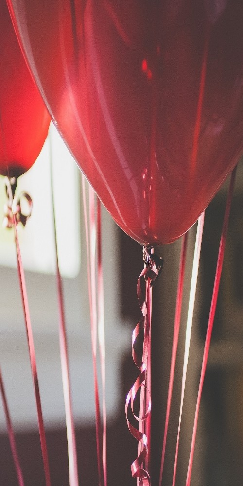
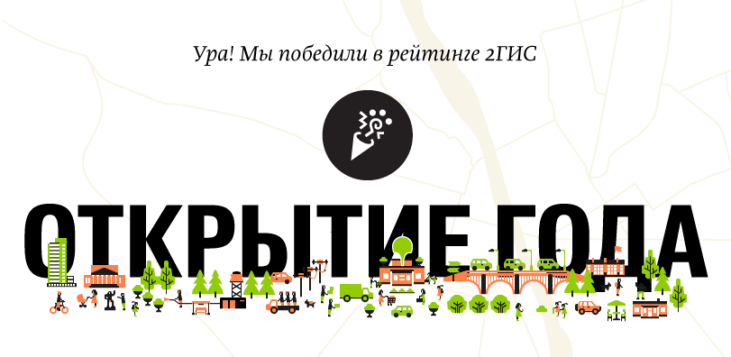
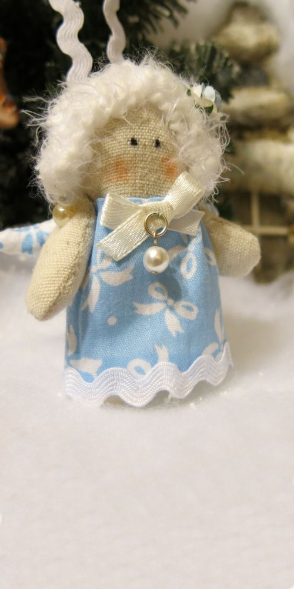
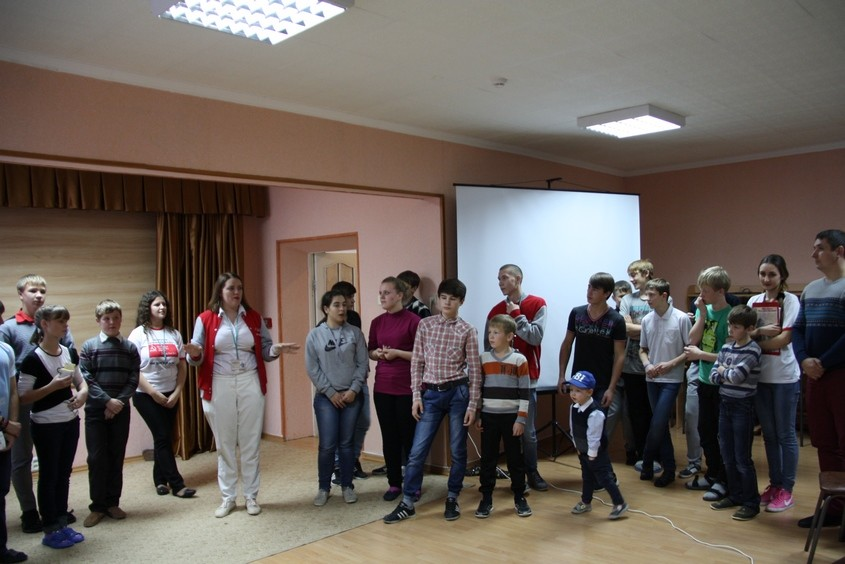
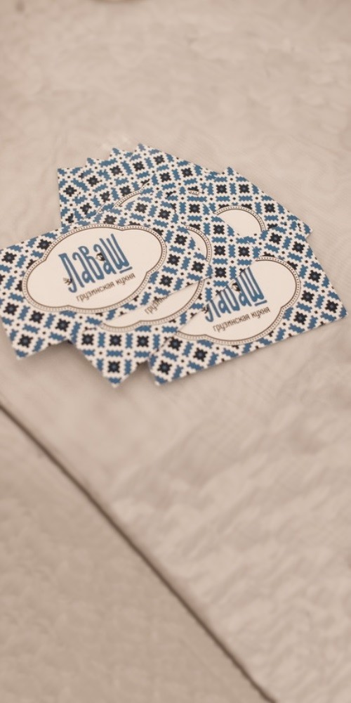
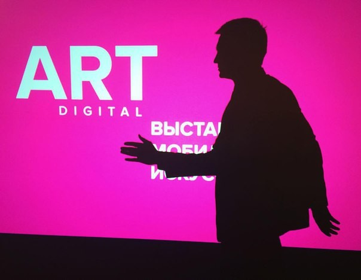
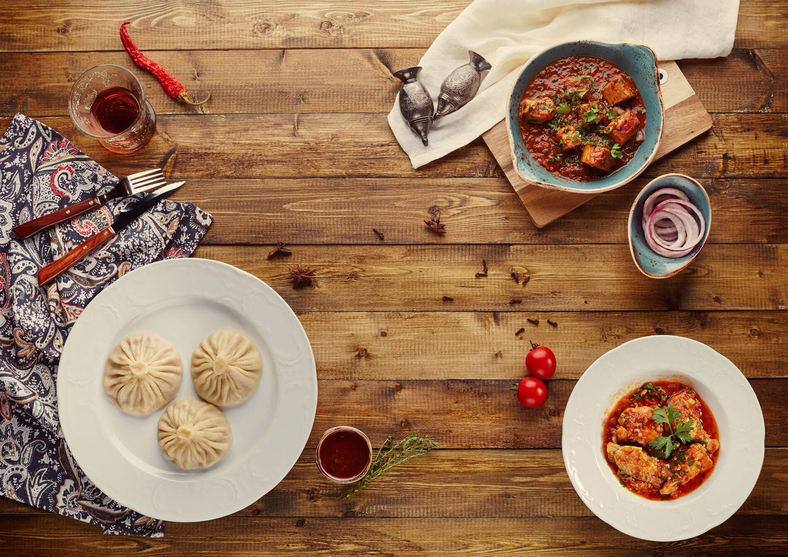

События
Демо-макет. События недоступны.
Демо-макет. События недоступны.
Салат Цезарь с курицей (250 гр)
+
Hoegaarden (0,5 л)
=
520 рублей
Салат с морепродуктами (250 гр)
+
Hoegaarden (0,5 л)
=
620 рублей
Чрезмерное употребление алкоголя вредит вашему здоровью

Маринованное мясо
Цена за 100 гр.
Баранина (мякоть)..................................120 рублей
Баранина (корейка).................................130 рублей
Свинина (мякоть)......................................80 рублей
Свинина (корейка).....................................95 рублей
Свинина (шея).............................................90 рублей
Печень в сетке.............................................60 рублей
Грибы..............................................................70 рублей
Барашек армянский 80 рублей / 4 шт
Барашек грузинский 40 рублей / 1 шт
Морс ягодный 250 рублей / 1 л
Угли + розжиг 300 рублей
Комплект одноразовых приборов 50 рублей / на 4 персоны
Заберите собранный набор для пикника в ресторане или закажите в службе доставки по телефону: 230-330

2ГИС выбирал самые популярные организации города Ставрополя из тех, что открылись в 2015 году.
С вашей помощью мы выиграли в своей категории. Спасибо вам!
Подробнее на http://2gis.ru/stavropol/award2015 #2GIS_Открытия


В детском доме № 13 села Надежда прошла акция «Школа мужества. Победа глазами наследников». Воспитанников учреждения посетили студенты, активисты, представители власти и бизнес-сообщества. В числе почетных гостей был и директор нашего ресторана «Барашек» Петр Ромас. Он рассказал детям о том, как можно реализовать себя абсолютно в любых точках планеты. Помимо этого, Петр открыл ребятам секреты работы ресторана грузинской кухни и обсудил с ними прием сотрудников на работу.

В нашем заведении работают лучшие профессионалы: повара, прибывшие из Грузии и знающие толк в настоящей традиционной кухне, официанты, которые на высшем уровне обслуживают клиентов и другой персонал, следящий за уютом и качеством работы. Мы намерены поддерживать эту тенденцию и впредь, и с охотой примем сотрудников, которые будут любить свое дело. Воспитанники детдома остались довольны общением с директором «Барашка». Возможно, после этой встречи кто-то из них решит стать первоклассным поваром или же открыть собственное кафе. У этих детей множество путей в жизни, и нашей задачей было — указать верный.

В галерее «Паршин» состоялось открытие выставки мобильного искусства «ART DIGITAL». Гостям были представлены работы, которые жители Ставрополья отправляли на конкурс. Главной особенностью было то, что фотографии, видеоролики и коллажи сделаны на мобильный телефон или планшет. Но, несмотря на это, работы порой не уступали даже снимкам, сделанным на профессиональную аппаратуру.

Чтобы голод не помешал гостям в полной мере насладиться искусством, ресторан грузинской кухни «Барашек» организовал фуршет с традиционными, вкусными и разнообразными блюдами. Все желающие могли полакомиться пеновани — выпечкой из слоеного теста с сыром, имеретинскими хачапури, сделанными с добавлением самого популярного в грузинской кухне сорта сыра. Также посетителей выставки мы угощали традиционной грузинской закуской с орехами и специями под названием пхали, вкуснейшими рулетиками из баклажанов и различными нарезками. Ну и конечно, ни одно грузинское застолье не обходится без всем известного ткемали и других соусов.

Все эти блюда, а также многое другое вы можете отведать в нашем ресторане по адресу: улица Мира, 285. Не сомневайтесь, наши повара смогут удивить ваш желудок.
Загрузить ещё
5 событий